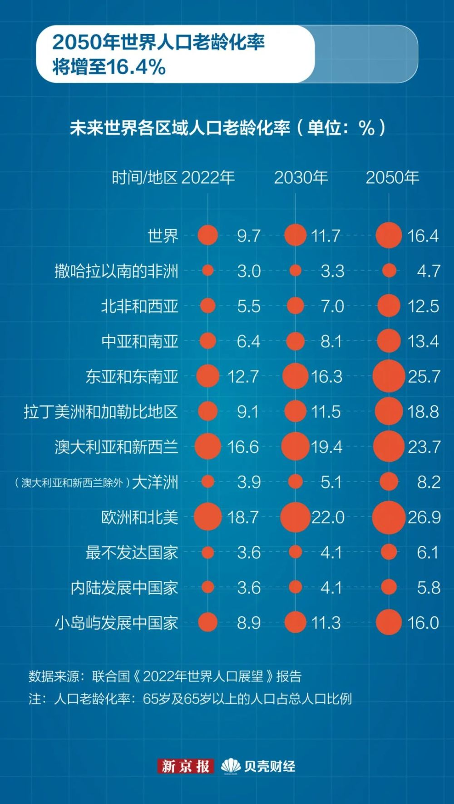

/ / / / /
根据联合国预测,印度人口数量将会在2023年4月中旬超过我国，成为全球第一人口大国。让我们来解读一下世界人口变化情况。
当前世界人口数量是二十世纪中期的三倍多。1950年，全球人口约为25亿，到2022年11月中旬，这一数字已达80亿，自2010年以来增加了10亿，自1998年以来增加了20亿。预计在未来30年，世界人口将增加近20亿，从目前的80亿增至2050年的97亿，并可能在2080年代中期达到近104亿的峰值。 全球人口急剧增长的主要原因是存活到生育年龄的人口数量不断增加、人类寿命逐渐延长、城市化不断发展以及移徙不断加速。生育率也随之发生重大变化。这些趋势将对子孙后代产生深远影响。
世界人口数量实时统计网站
2.八十亿人口日2022年11月15日，世界人口达到80亿，这是人类发展的一个里程碑。全球人口从70亿增长到80亿花了12年的时间，而从80亿到90亿则需要大约15年的时间（到2037年），这表明全球人口的总体增长速度正在放缓。然而，一些国家的生育率仍然很高。生育率最高的国家往往是人均收入最低的国家。因此，随着时间的推移，全球人口增长会越来越集中在世界上最贫穷的国家，其中大多数位于撒哈拉以南非洲。
|  |
全球人口中有55%（44亿）生活在亚洲，17%（13亿）生活在非洲，14%（11.2亿）生活在欧洲和北美洲，8%（6.58亿）生活在拉丁美洲及加勒比（地区），其余1%生活在大洋洲（4300万）。中国（14亿）和印度（14亿）仍然是世界上两个人口最多的国家，其数量均超过了10亿，分别占世界总人口的近18％。联合国预测：印度人口数量将在2023年4月中旬超过中国，成为全球第一人口大国。自1947年印度独立后，至今其人口增长了超10亿，并且预计在未来的40年里还将继续增长。而中国的人口将在2019年至2050年间减少4800万，即2.7%左右。（资料来源:《2022年世界人口展望》和人口基金数据门户网站）
预计从现在到2050年，非洲将占全球人口增长的一半以上。非洲是所有主要地区中人口增长率最高的地区，预计到2050年，撒哈拉以南非洲的人口将翻一番。据计，即使非洲的生育水平在不远的将来出现大幅下降，该地区的人口仍将继续高速增长。虽然非洲生育率未来的趋势存在一定的不确定性，但是有一点是肯定的：非洲大陆当前有大量青年，他们将在未来几年进入成年期并生育子女，因此，非洲在未来几十年将在世界人口规模和分布方面发挥核心作用。
与非洲形成鲜明对比的是，到2050年，世界上有61个国家或地区的人口预计将会减少，其中26个国家或地区的人口将减少10%以上。预计波斯尼亚和黑塞哥维那共和国、保加利亚、克罗地亚、匈牙利、日本、拉脱维亚、立陶宛、摩尔多瓦共和国、罗马尼亚、塞尔维亚和乌克兰等国人口到2050年将减少15%以上。目前，所有欧洲国家的生育率都低于实现全面人口更替的水平（大约每名妇女平均生育2.1个子女），数十年来，大多数欧洲国家的生育率一直低于人口更替水平。
Map 3: Load external geojson file
Map 4: Proportional map and retrieve information from features
Map 5: Proportional map
Map 6: Choropleth map